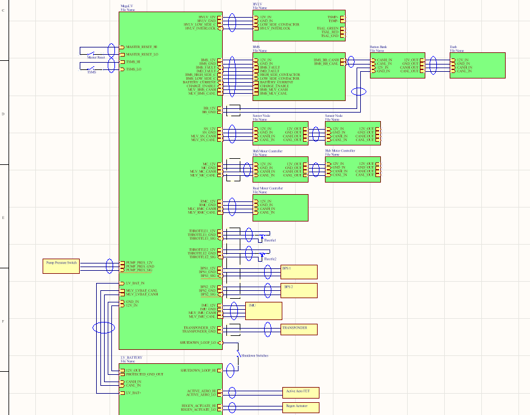
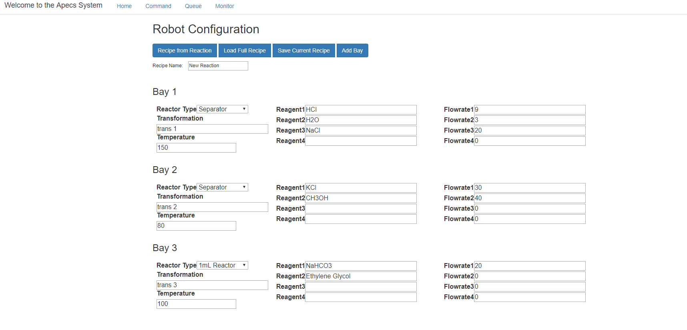

Portfolio Recent Work

MY19 EE System Design
As the electrical systems lead for the MIT FSAE team, I architected the low voltage system and personally designed the vehicle control unit. I am currently managing a team of 15 members in order to create, program, and integrate the PCBs and peripherals that make up this system.
Power Electronics Group UROP
With the Power Electronics Group at the Research Laboratory of Electronics at MIT, I am designing a lightweight high-voltage multi-level step up inverter. For this project, I have used LTSpice and MATLAB to analyze the performance of various switched-cap multi-level inverter topologies. Over the next few months, I will select a specific topology to build, source components, layout the PCB, and then test the converter's performance.

6.1151 Touchless Whack-a-Mole
For my "Microcomputer Project Laboratory" final project, I designed and implemented a whack-a-mole style game using infrared sensing and frequency recognition. For this project, I used an Intel MCS-51 chip and a PSoC 6. I designed and built all of the electrical and mechanical components myself, and wrote code to identify signals of different frequencies coming from the infrared phototransistors.

Milwaukee Tool Internship
I interned in the Advanced Engineering department at Milwaukee Tool over Summer 2018. I performed a full benchmarking and teardown of a competitor motor drive, which involved assessing power delivery, thermal performance, and EMC. I also began testing of a new motor control platform.

6.334 Power Electronics Design Project
The final project for 6.334 (Power Electronics) requires students to design a buck converter at a high level of detail under challenging constraints. I calculated what values would be acceptable for the passive and switching components in the converter, and specified parts based on those requirements. I then assessed the losses in each part of the converter and designed a control scheme to keep the converter operating within its specifications.

Lincoln Laboratory Internship
Implemented a module in C++ for telemetry applications.

MY18 Button Bank
For the MIT FSAE Model Year 18 vehicle, I designed, built, and tested the button bank. This PCB takes driver input and relays that information to the rest of the electrical system over CAN. The board is based around an LPC11C14 microcontroller.
MY17 HVDCDC
For the MIT FSAE Model Year 17 vehicle, I redesigned, built, and tested the high voltage DC to DC converter board. The board required a redesign because it was generating too much ripple on the voltage source for the vehicle's LV system. I added input and output filtering to the converter which decreased the ripple magnitude.
6.131 Projects
For the course "Power Electronics Laboratory" at MIT, I designed and built a buck converter, boost converter, and double flyback converter for various applications.

APECS
While working in the Jensen Laboratory in the MIT Chemical Engineering Department, I built a web application and data storage and communication scheme to remotely control a robotic system for autonomous chemistry. This involved using forward and reverse kinematics to path-plan for a 6-degree of freedom robotic arm within the system.